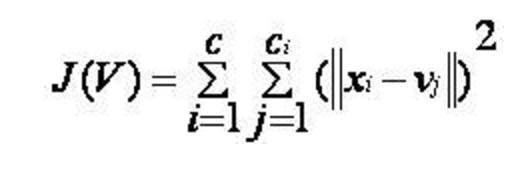
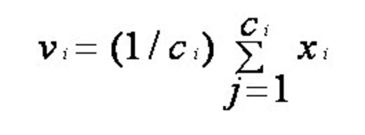

CS Graduate Students at University of North Carolina Charlotte
Steps Followed for implementation

where,
‘||xi - vj||’ is the Euclidean distance between xi and vj.
‘ci’ is the number of data points in ith cluster.
‘c’ is the number of cluster centers.
Note :- We use the norm Face Distance as given above instead of the Euclidean distance
Algorithmic steps for k-means clustering
Let X = {x1,x2,x3,……..,xn} be the set of data points and V = {v1,v2,…….,vc} be the set of centers.
1) Randomly select ‘c’ cluster centers.
2) Calculate the distance between each data point and cluster centers.
3) Assign the data point to the cluster center whose distance from the cluster center is minimum of all the cluster centers..
4) Recalculate the new cluster center using:

where, ‘ci’ represents the number of data points in ith cluster.
5) Recalculate the distance between each data point and new obtained cluster centers.
6) If no data point was reassigned then stop, otherwise repeat from step 3).
Once the Clusters are formed , for each input image we find the best three clusters based on the face distance with Cluster Center matrices and retrieve the Top 10 images in those Clusters alone.
Principal component analysis (PCA) is a technique used to emphasize variation and bring out strong patterns in a dataset. It's often used to make data easy to explore and visualize.
In our case say we have a input feature set of 128 (D) features our goal is to generate the M features matrix for every input image
We calculate the Mean of the matrices in the input dataset and generate covariance matrix and principal components as a pre-processing step and save the dimension reduced matrices , mean and principal components in a file
The above step is a preprocessing step, so for each input image we calculate the M feature matrix using the mean and principal components and compare them with the M dimension matrices of the dataset images precomputed
We then return the results on applying face distance and sort them in ascending order and retrieve the top 10 results
Python, Spark,
Face Recognition Library - Click here